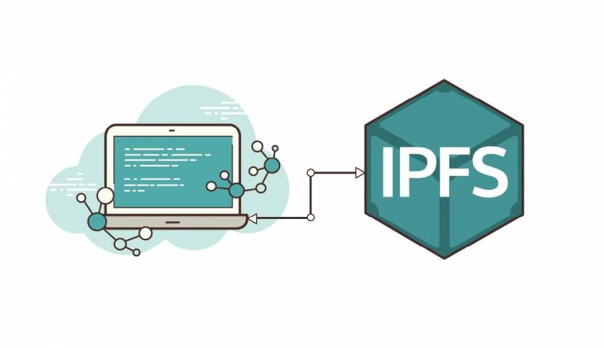
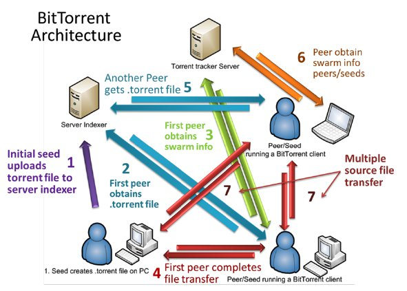
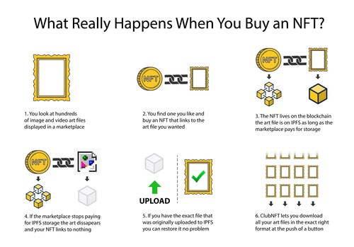
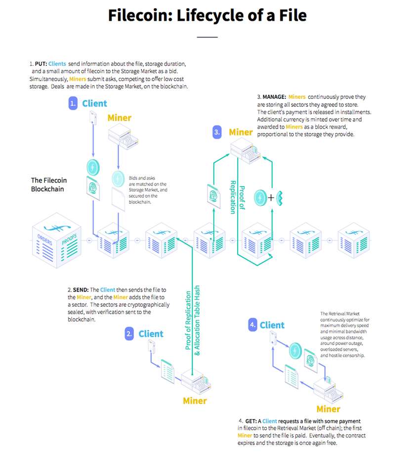
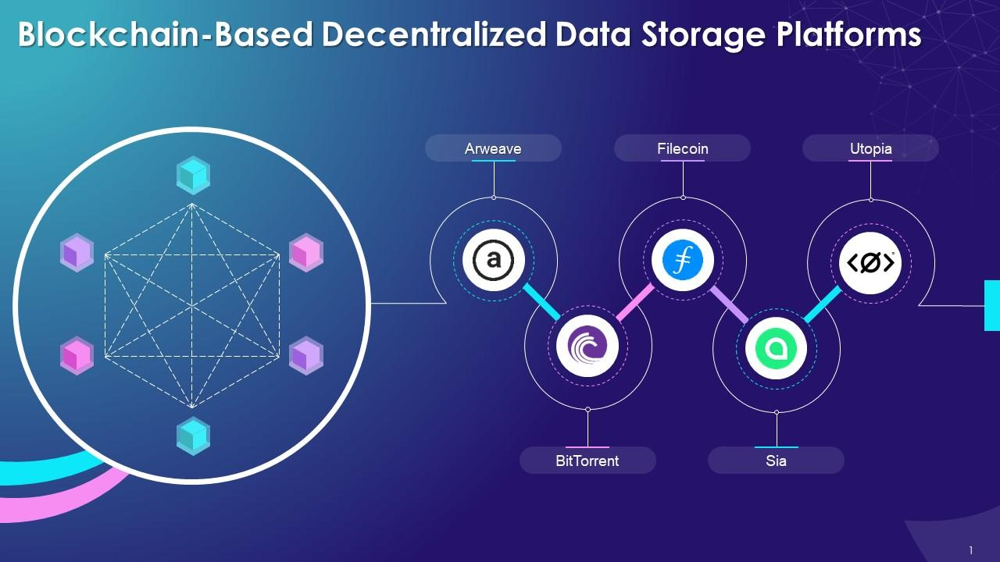
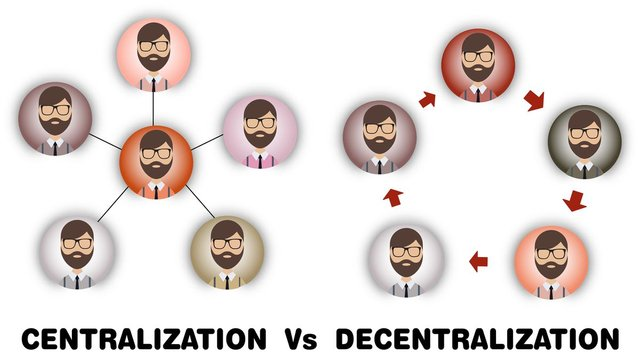
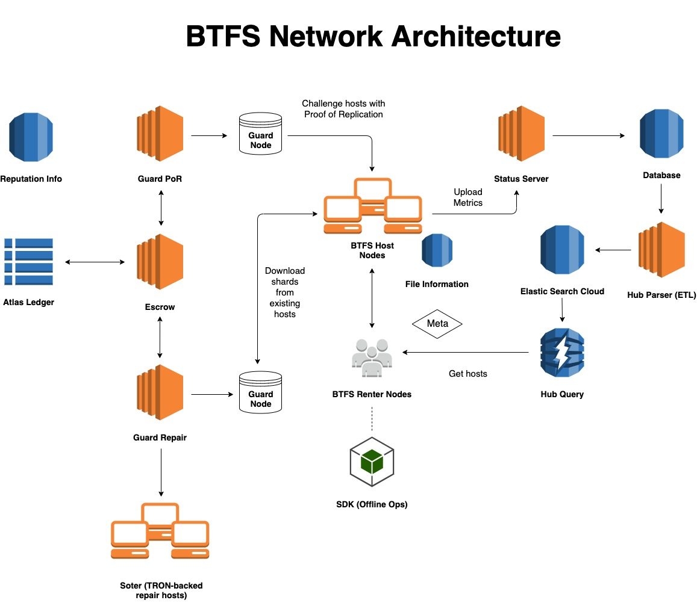

去中心化数据存储怎样结合区块链

当我们在互联网上搜索 IPFS (InterPlanetary File System) 的定义时，Wikipedia 给出的答案是：一种网络传输协议（底层使用 libp2p）与 P2P (Peer-to-Peer) 网络，用于在分布式文件系统中存储和共享数据（下文中多数情况下“数据”与“文件”指代相同）。与预期不同的是，在对 IPFS 的描述中，我们没有看到与区块链或者 Web3 的直接关联，反而是用户在网络中托管与访问数据的方式与古老的 BT (BitTorrent) 网络有几分相似。

BT (BitTorrent) 也是一种用于 P2P 文件分享的网络传输协议，遵守 BT 协议的客户端软件（节点）可以借助于种子文件 (Torrent File) 在 BT 网络中下载数据。种子文件中记录了数据的描述信息以及追踪服务器的列表，在追踪服务器的协助下，所有共享同一个种子文件的节点组成了一个群组 (Swarm)，彼此分享数据。与传统的由服务器到客户端的下载方式相比，BT 网络通过群组内共享上传的方式，突破了单一节点上传的带宽限制，从而加快了下载速度，同时也避免了单一节点失效导致无法下载的风险。因而BT实际上构建了一个去中心化的文件共享网络。

IPFS 与 BT 的思路相似，不过采用了另一种解决方案，所有节点自动组成一个唯一的群组，托管的数据将被分割存储，并生成数据对应的哈希值，称为内容身份 (CID)，相同的数据将共享同一个 CID，避免重复存储。数据与托管地址的对应关系由一张分布式哈希表 (Distributed Hash Table, DHT) 来维护，DHT 则由全部节点共享。通过这种方式，IPFS 也构建了一个去中心化的数据存储与共享的网络。与 BT 网络不同的是，自 2015 年推出以来，IPFS 没有广泛应用于分布式下载，而更多的是被当作去中心化应用 (Dapp) 的存储系统，比如 NFT 所对应的数字资产实际上就是被存储于 IPFS 网络中的。

另一方面，IPFS 同样也面临着与 BT 类似的问题。节点托管数据是要消耗资源的，然而无论 BT 还是 IPFS，网络本身都缺乏激励机制，来奖励那些托管数据的节点，因而对于并不热门的数据来说，提供托管的节点很少甚至没有，这也就导致了数据的可获取性下降。比如在 BT 网络中，热门数据刚上线时，有大量的节点参与下载（同时也上传数据给其他节点），所以下载速度很快，然而当热度散去后，群组中的节点数下降，再下载数据就很困难了。在 IPFS 网络中，通过客户端软件可以设定哪些数据是被“固定”的，只要节点接入网络，这些被固定的数据就会被持续托管，而那些没有被固定的数据则有可能被不定期清除。所以 IPFS 并不是一个无限的存储空间，对于一个上传至网络中的数据，如果没有节点固定该数据，那么该数据就面临着永久性损失的风险。
到目前为止，除了作为 Dapps 的存储系统以外，IPFS 并没有与 Web3 在本质上产生联系，而真正将 IPFS 与 Web3 关联起来的是 Filecoin 项目。IPFS 原本是由 Juan Benet 创造的，此后 Juan Benet 又成立了 Protocol Labs，Filecoin 项目正是由 Protocol Labs 发起并运营的，所以也可以说 Filecoin 与 IPFS 是一脉相承的。Filecoin 是一个基于区块链的电子支付系统，区块链的内生加密货币也叫做 filecoin，代码是 FIL。可以说，Filecoin 的目的就是为 IPFS 引入激励机制。

Filecoin 使用的协议是与 IPFS 兼容的，实际上所有的 Filecoin 节点底层上都是 IPFS 节点，所以也能够连接到其他 IPFS 节点并获取数据，但是 Filecoin 节点是不参与 IPFS 的分布式哈希表 (DHT) 的，也就是说，反过来 IPFS 节点是不能从 Filecoin 节点获取数据的。Filecoin 创造了一个分布式的存储空间市场，拥有大量空闲存储空间的节点可以在市场上出租自己的存储能力并收取租金。而希望长期存储数据的用户则可以在市场中购买存储空间。交易在区块链上完成，以 FIL 支付结算，通过智能合约对存储数据的完整性进行验证，惩罚不能完成存储合约的节点。这样就形成了一个完整的去中心化数据存储系统。
可以看到，在 Filecoin 网络中，IPFS 负责实现去中心化存储，区块链则用来提供交易和激励机制。去中心化与区块链是不同的模块，也就是说，区块链的机制是去中心化的，但并不是所有的去中心化都要用到区块链，将去中心化与区块链划等号的理解是不到位的。

接下来，在互联网上搜索去中心化数据存储系统，我们会发现还有许多类似的项目，其中一个比较有趣的是 Storj。Storj 的底层思路与 Filecoin 十分相似，参与网络的节点既可以出租空闲存储空间，也可以购买存储服务。Storj 同样发行了自己的代币（基于 ERC-20）用于交易。我们将 Storj 与 Filecoin 的对比汇总于下表。
| Filecoin | Storj | |
|---|---|---|
| Storage Type | Decentralized | Decentralized |
| Client | Lotus (open-sourced) | Uplink (open-sourced) |
| Protocol | IPFS | Storj Protocol |
| Blockchain | Native | ERC-20 |
| Cryptocurrency | FIL | STORJ |
| Market Cap | $1.67B | $0.18B |
| Total Supply | 1.97B | 425M |
| Market Type | Free Market | Market Maker |
Storj 与 Filecoin 最大的不同在于组织市场的形式。Filecoin 依托于区块链建立了一个双边多向的自由交易市场，所有节点都可以与其他节点进行交易，而 Storj 则选择了承担做市商的角色，所有的买家和所有的卖家都只能与 Storj 进行交易。
尽管 Storj 也引入了区块链和代币作为交易媒介，但却选择了一种中心化的商业模型。在这个模型中，买家需要支付一定的价钱向 Storj 购买存储空间，Storj 再将买家的数据分布式存储于卖家的节点上，再根据占用卖家资源的情况支付报酬。可以看到，区块链技术在 Storj 的商业模式中所起到的作用其实并不显著，或者说，即使去掉区块链模块，全部换成法币结算，Storj 也能顺利运营，甚至更为流畅。实际上也的确如此，如果要购买存储空间，Storj 是同时接受 STORJ 和法币的，可以想见的是，大多数用户还是倾向于使用法币支付的，甚至 Storj 的官方定价也是以美元标价的。另外一个去中心化数据存储项目 Sia 曾经表示过，每 TB 存储空间的价格大约为每月 2 美元（实际支付是由代币 Siacoin 完成的，但剔除代币价格波动后，最终反映的依然是较为稳定的法币价格）。
姑且不论是否使用区块链技术，同样作为分布式数据存储系统，Filecoin 与 Storj 实际上是选择了去中心化与中心化两种完全不同的商业模式。两种商业模式本身并没有绝对的优劣之分，两者各有优势与劣势，取舍之间仍然是成本与收益的分析框架。Filecoin 的去中心化模式避免了网络中的单点风险，即使 Protocol Labs 经营不善倒闭了，在开源社区的维护之下，Filecoin 网络依然可以照常运行，而这是中心化的 Storj 做不到的。去中心化的主要好处之一是可以快速建立起信任链条，或者说建立起无信任基础的交易关系，这在项目的快速推广方面也有显著的优势，比如在 Filecoin 与 Storj 之间进行选择时，重要的数据还是存储在 Filecoin 会使人更为安心。但从运营与交易的成本来讲，Storj 更有优势，Filecoin 使用的是自建的区块链，维护成本较高，即使使用的是以太坊区块链，交易双方匹配时所需的时间和搜寻成本也难以避免，而且容易导致服务的价格出现较大的波动。Storj 的中心化模式省略了交易匹配的过程，提供服务时价格固定，甚至还有免费空间的额度，用户的使用体验会更好。所以整体而言，两种模式更多是互补共存的状态，并不是要完全取代对方的竞争。
另一方面，加密货币也可以看成是一种金融创新。就如同股票是企业盈余分配权的代理一样，代币也可以作为交易规模 (GMV) 的代理。在 Filecoin 和 Storj 的例子中，由于存储服务的交易都是通过代币来实现的（暂时忽略 Storj 接受法币的情况），所以一定时间内市场的交易额就对应着应用的总需求，这种对应关系就像股票对应着企业的净资产一样。如果说股票的基本面（内在价值）由企业净资产（及其预期）决定，那么 FIL 和 STORJ 的基本面就由各自应用的总需求（交易额）决定，上文提到的 Siacoin 的例子也可以说明这一点。加密货币总市值的大小，往往也对应了应用市场的大小，比如 FIL 的市值远大于 STORJ，整体上可以认为 Filecoin 在应用市场中的份额也远大于 Storj。此外，股票的价格除了受到基本面的影响之外，本身供给数量和流动性的变化也会起到显著的作用，在这一点上，加密货币与权益类资产确实有相似之处。而加密货币的优势在于，只需短短几行代码，以很低的成本，就可以把企业价值在不同层面上进行代币化（证券化），这其中所酝酿的机会，在未来足以创造一个规模庞大的创新金融工具市场。

重新说回到 Storj 的例子。上文提到，数据存储的去中心化实现并不依赖于区块链技术，而 Filecoin 使用区块链是为了引入激励机制。到了 Storj 这边，中心化的运作模式已经拥有了激励机制的必要因素，使用区块链技术或许醉翁之意不在酒。实际上，为了实现激励机制，也并非一定要使用区块链。
不妨设想，某互联网大厂推出了这样一款产品，叫做“激励宝”，专门为各种商业服务增加激励机制。用户可以用法币一比一兑换应用内的虚拟货币“激励币”，“激励宝”则提供用户之间的交易和结算服务。比如，传统的 BT 网络想要引入激励机制，则可以在客户端内嵌入“激励宝”的组件，用户可以通过“激励币”来激励更多的节点托管文件或者延长托管时间。从效果上来看，这样就实现了一个与 Filecoin 功能相同的应用，只不过采用了中心化的激励机制。可惜的是，在区块链技术流行之前，现实世界并没有出现这样的产品，否则区块链就又多了一个竞争的对手，或者被颠覆的对象。

顺便一说的是，现在的 BT 网络确实也有了新的发展。BitTorrent 协议是由 Bram Cohen 于 2001 年创立的，此后 Bram Cohen 又设立了 BitTorrent 公司（现已更名为 Rainberry 公司）来维护协议并且开发客户端。2018 年，Bram Cohen 将 Rainberry 出售给孙宇晨的波场基金会 (TRON Foundation) 并离开公司。自此 BitTorrent 也开启了 Web3 的转型，发行了 BitTorrent 网络的代币，代码 BTT，推出了 BitTorrent Speed 机制，思路上与“激励宝”一样，通过 BTT 来激励更多的节点做种，加快下载速度。另外还有 BitTorrent File System (BTFS)，相比于强调文件共享和下载的 BitTorrent Speed，BTFS 更加强调去中心化的数据存储，与 Filecoin 形成了直接的竞争。
| Filecoin | Storj | BitTorrent | |
|---|---|---|---|
| Client | Lotus | Uplink | BitTorrent Classic |
| Protocol | IPFS | Storj Protocol | BTFS |
| Blockchain | Native | ERC-20 | ERC-20 |
| Cryptocurrency | FIL | STORJ | BTT |
| Market Cap | $1.67B | $0.18B | $0.78B |
| Total Supply | 1.97B | 425M | 990B |
| Market Type | Free Market | Market Maker | TBC |
总结一下，我们以去中心化数据存储为例，双向打破了两个区块链等式。首先，去中心化的概念早于区块链，并非所有的去中心化应用都涉及到区块链；另一方面，一个项目引入区块链技术，也可以不是为了实现去中心化的功能；去中心化市场需要代币来实现，引入代币却不一定是为了实现去中心化市场。另外，激励机制的实现可以不使用区块链，区块链的引入也不必一定实现激励机制。
区块链技术与加密货币不仅仅是为 Web3 服务的，传统服务的价值也可以通过代币来体现。代币的价值就是底层应用价值的代理，而底层应用可以是去中心化的，也可以是中心化的。另一方面，一个应用的区块链含量可大可小，可以小到仅仅用来实现价值的代理，也可以大到实现全局的去中心化和激励机制。
当我们分析一个加密货币项目时，也应该区分项目背后所对应的应用场景，也即加密货币的“基本面”。如果刚巧属于传统应用，我们甚至能够完全套用现有的分析方法；如果遇到的是 Web3 应用，尽管当前我们的理解还比较有限，不过随着人们对 Web3 研究的不断加深，一定也会涌现出更多更好的分析方法。∎